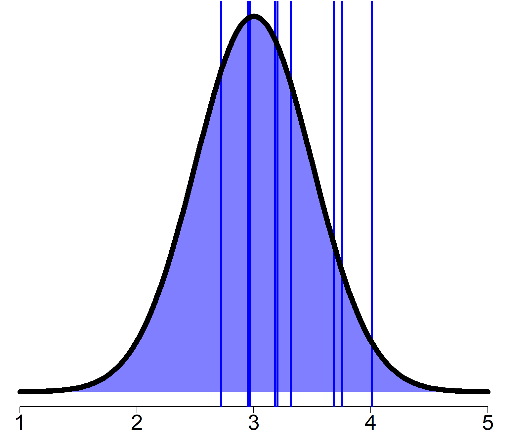
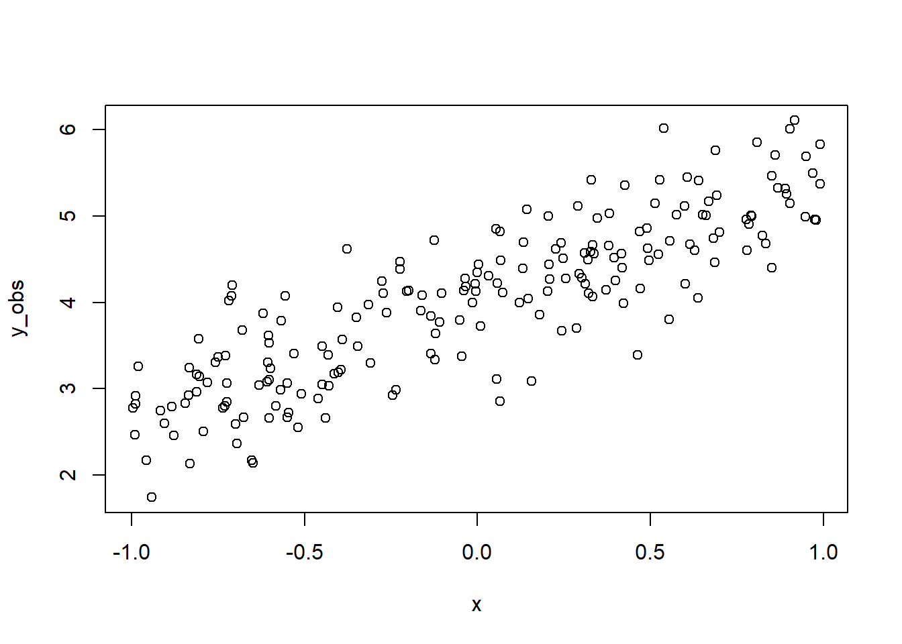
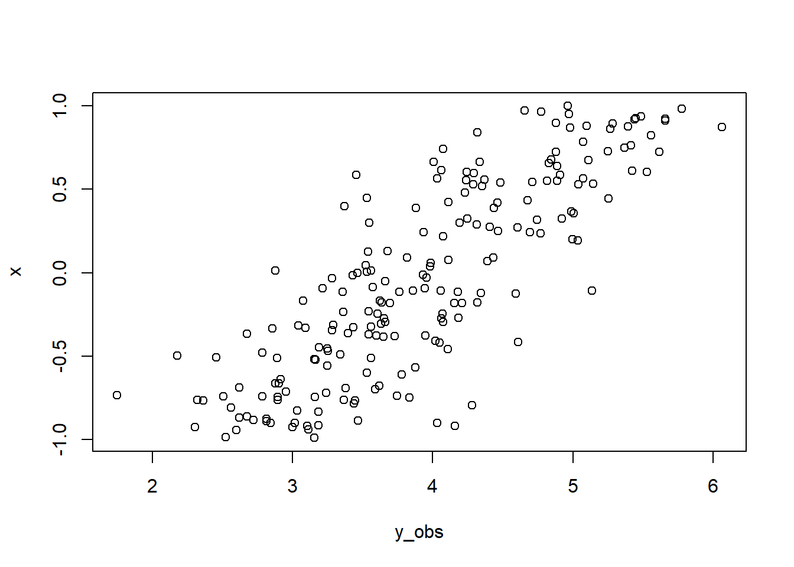
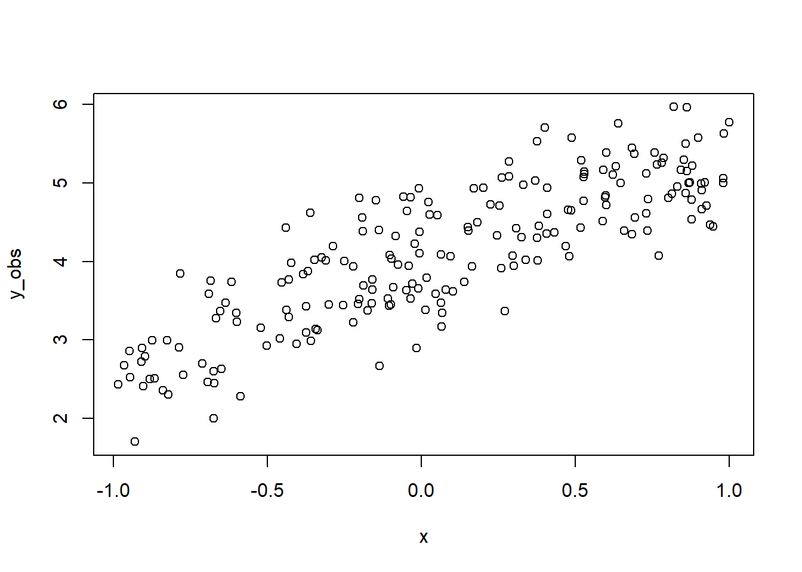

‘Simple’ hierarchical models
“Simple” hierarchical model
Here, we use the term “simple” in a rather loose way to discuss hierarchical models without any constrains, whether they are spatial, temporal, phylogenetic or others.
Futhermore, for most of this lecture, we will focus on models with a Gaussian error term to develop the underlying theory.
When we will have done this, it will be reasonably straight forward to move to non-Gaussian hierarchical model.
A (very !) general formulation
As discuss yesterday, a linear model can be writen as
\[\mathbf{y}\sim \mathcal{MVN}(\mathbf{X} \boldsymbol{\beta}, \sigma^2\mathbf{I})\]
where
- \(\mathbf{y}\) is a vector quantifying a response variable of length \(n\)
- \(\mathbf{X}\) is a matrix of explanatory variables with \(n\) rows (samples) and \(p\) columns (explanatory varaibles)
- \(\boldsymbol{\beta}\) is a vector \(p\) pararameters weighting the importance of each explanatory variables in \(\mathbf{X}\)
- \(\sigma^2\) is a measure of variance of the error in the regression model
- \(\mathbf{I}\) is an \(n \times n\) identity matrix
A (very !) general formulation
A hierarchical model is a generalization of the linear model such that
\[(\mathbf{y}|\mathbf{b} )\sim \mathcal{MVN}(\mathbf{X} \boldsymbol{\beta} + \mathbf{Z}\mathbf{b}, \sigma^2\mathbf{I})\]
where
- \(\mathbf{y}\) is a vector quantifying a response variable of length \(n\)
- \(\mathbf{X}\) is a matrix of explanatory variables with \(n\) rows (samples) and \(p\) columns (explanatory variables)
- \(\boldsymbol{\beta}\) is a vector \(p\) pararameters weighting the importance of each explanatory variables in \(\mathbf{X}\)
- \(\sigma^2\) is a measure of variance of the error in the regression model
- \(\mathbf{I}\) is an \(n \times n\) identity matrix
- \(\mathbf{Z}\) is another matrix of explanatory variables with \(n\) rows (samples) and \(q\) columns (explanatory variables)
- \(\mathbf{b}\) is a vector \(q\) pararameters weighting the importance of each explanatory variables in \(\mathbf{Z}\)
A (very !) general formulation
A hierarchical model is a generalization of the linear model such that
\[(\mathbf{y}|\mathbf{b} )\sim \mathcal{MVN}(\mathbf{X} \boldsymbol{\beta} + \mathbf{Z}\mathbf{b}, \sigma^2\mathbf{I})\] What is also noticeable in this model is the conditional relationship between \(\mathbf{y}\) and \(\mathbf{b}\).
Specifically, in this formulation,
\[\mathbf{b}\sim \mathcal{MVN}(\mathbf{0}, \mathbf{\Sigma})\] where \(\mathbf{\Sigma}\) is a covariance matrix.
Based on this general formulation, we can now define all unconstrained hierarchical models.
The “|”
Most of you have probably already used the packages lme4 or brms to build hierarchical models and so you have used the | to include a hierachy in your model.
But do you know what the underlying mathematical structure of the model you built look like ? Does it really answer the question you were asking ?

Let’s look at different lme4 models to learn about some basic (and not so basic!) hierarchical models.
A bit of notation
Before we get into writing math, we need to define a bit of notation in addition of the one we have used so far.
Specifically, when define a hierarchy in a model, it is common to do this using at least one factor. Mathematically, we will define the different level of a factor in a model by a subscript.
We will use square brackets to define the level of interest
Example
\[\mathbf{Z}_{f[l]}\] This means that, within \(\mathbf{Z}\), we focus on \(l^{\text{th}}\) level of factor \(f\).
Hierarchy on the intercept
lme4 notation used y ~ (1 | f) or y ~ 1 + (1 | f)
This model assumes there is a hierarchy solely on the intercept.
Mathematically, it can be translated to
\[\mathbf{y} \sim \mathcal{MVN}(\mathbf{b}_{f[l]},\sigma^2\mathbf{I}) \quad \forall\quad l = 1\dots k\] or
\[y_i = b_{{f_i[l]}} + \varepsilon \quad \forall\quad l = 1\dots k\,\,\,\,\text{and}\,\,\,i = 1\dots n\] In words, this means that the model values \(b\) will change for a sample \(i\) only when the level \(l\) of the factor \(f\) changes.
This is because in this model
\[\mathbf{b} \sim \mathcal{N}(0, \sigma^2_f)\]
Hierarchy on the intercept
Stan code for this model
For Andrew?
Hierarchy on the intercept
Hierarchy on the slopes
lme4 notation : y ~ 1 + (x | f)
This model assumes there is a hierarchy on the parameters associated to variable x.
Mathematically, it can be translated to
\[\mathbf{y} \sim \mathcal{MVN}(\beta_0 + \mathbf{Z}\mathbf{b}_{f[l_f]},\sigma^2\mathbf{I}) \quad\forall\quad l_f = 1\dots k_f\] or
\[y_i = \beta_0 + b_{f[l_f]}z_i + \varepsilon \quad\forall\quad l_f = 1\dots k_f\,\,\,\,\text{and}\,\,\,i = 1\dots n\] In words, this means that the weight on variable \(z\) will change for a sample \(i\) only when the level \(l\) of the factor \(f\) changes.
This is because in this model
\[\mathbf{b} \sim \mathcal{N}(0, \sigma^2_f)\]
Hierarchy on the slopes
Stan code for this model
For Andrew?
Hierarchy on the slopes

Hierarchy on intercept and slope
Mathematically speaking, what are the differences between having a hierarchy on the intercept and a slope ? Any idea ?

Hierarchy on intercept and slope
Answer : Very little !
Actually, if we return the way \(\mathbf{b}\) is defined we see that in both case it is defined as
\[\mathbf{b} \sim \mathcal{N}(0, \sigma^2_f)\] with the sole difference that \(\mathbf{b}\) linked to an explanatory variable when the hierarchy is on the slope, while when the hierarchy is on the intercept it is not linked to any explanatory variable.
Well… Actually… When a hierarchy is applied on the intercept it is technically associated to a constant explanatory variable.
How many levels ?
A common question that often gets asked is :
“How many level is enough ?”
This is a simple questions that sadly does not have a simple answer.

How many levels ?
In these types of models we are interested in estimating the variance parameter \(\sigma^2_f\) in
\[\mathbf{b} \sim \mathcal{N}(0, \sigma^2_f)\] to get the best estimation of \(\mathbf{b}\).
So, another way to ask this question is “What is the minimum number of samples needed to properly estimate the variance of a Gaussian distribution?”
However, in the context of how we defined hierarchical models, a sample amounts to being the level of a factor.
How many levels ?
What is the minimum number of samples needed to properly estimate the variance of a Gaussian distribution?
Is 3 enough ?

True variance : 0.25
Estimated variance : 0.234
How many levels ?
What is the minimum number of samples needed to properly estimate the variance of a Gaussian distribution?
Maybe 5 ?

True variance : 0.25
Estimated variance : 0.12
How many levels ?
What is the minimum number of samples needed to properly estimate the variance of a Gaussian distribution?
Or 10 ?

True variance : 0.25
Estimated variance : 0.174
How many levels ?
What is the minimum number of samples needed to properly estimate the variance of a Gaussian distribution?
Or 50 ?

True variance : 0.25
Estimated variance : 0.331
How many levels ?
What is the minimum number of samples needed to properly estimate the variance of a Gaussian distribution?
Or 100 ?

True variance : 0.25
Estimated variance : 0.271
How many levels ?
What is the minimum number of samples needed to properly estimate the variance of a Gaussian distribution?
Or 1000 ?

True variance : 0.25
Estimated variance : 0.251
How many levels ?
There is a consensus among researchers working intimately with hierarchical that when the interest is to properly estimate the variance parameter \(\sigma^2\), 5 or 6 levels is the extreme minimum.
In the book Richly Parameterized Linear Models: Additive, Time Series, and Spatial Models Using Random Effects, James S. Hodges (2016) makes this very thoughtful statement :
“Treating factors with small numbers of levels as random will in the best case lead to very small and/or imprecise estimates of random effects; in the worst case it will lead to various numerical difficulties such as lack of convergence, zero variance estimates, etc.”
How many levels ?
So, what to do if the number of level is not high enough for your comfort ?
You can still use the hierarchy in your model but focus on the mean of the levels instead of the variance.
How does this translate mathematically, with what we have seen so far
Hierarchy on the intercept
Focus on the mean
\[\mathbf{y} \sim \mathcal{MVN}(\boldsymbol{\beta}_{f[l]},\sigma^2\mathbf{I}) \quad \forall\quad l = 1\dots k\] or
\[y_i = \beta_{f_i[l]} + \varepsilon \quad \forall\quad l = 1\dots k\,\,\,\,\text{and}\,\,\,i = 1\dots n\] In this model, we assume that \(\boldsymbol{\beta}_{f[l]}\) is distributed as
\[\boldsymbol{\beta}_{f[l]} \sim \mathcal{N}(\mu_{f[l]}, \sigma^2_{f[l]})\] In words, this means that all the samples within the \(l^\text{th}\) level of factor \(f\) are used to estimate \(\boldsymbol{\beta}_{f[l]}\).
By developping our model this way, we focus on estimating the mean of groups in the hierarchy instead of only the variance.
Hierarchy on the intercept
Focus on the mean
Let’s take a deeper look at \[\boldsymbol{\beta}_{f[l]} \sim \mathcal{N}(\mu_{f[l]}, \sigma^2_{f[l]})\] When we study this way of sampling \(\boldsymbol{\beta}_{f[l]}\), although our interest is more on \(\mu_{f[l]}\), we also have to estimate the variance term \(\sigma^2_{f[l]}\).
Technically, we can sample all \(\boldsymbol{\beta}_{f[l]}\) independently, however, using multivariate Gaussian distribution, we can sample the \(\boldsymbol{\beta}_{f}\) for all levels of the factor in one go as
\[\boldsymbol{\beta}_{f} \sim \mathcal{MVN}(\boldsymbol{\mu}_{f}, \mathbf{D}_f)\] where
- \(\boldsymbol{\mu}_{f}\) is a vector of \(k\) means, one for each level of the factor
- \(\mathbf{D}_f\) is a \(k\times k\) diagonal matrix with variance term on the diagonal
Hierarchy on the intercept
Focus on the mean
The structure of matrix \(\mathbf{D}_f\) can be considered in two different ways in
\[\boldsymbol{\beta}_{f} \sim \mathcal{MVN}(\boldsymbol{\mu}_{f}, \mathbf{D}_f)\]
Written in the general form as we did in the equation above, we assume that all variance on the diagonal are potentially different. Or in other words, the variance in each group is assumed to be different
\[\mathbf{D}_f = \begin{bmatrix} \sigma^2_{f[1]} & 0 & \dots & 0 & \dots & 0\\ 0 & \sigma^2_{f[2]} & \dots & 0 & \dots & 0\\ \vdots & \vdots & \ddots & \vdots & & \vdots\\ 0 & 0 & \dots & \sigma^2_{f[l]} & \dots & 0\\ \vdots & \vdots & & \vdots & \ddots & \vdots\\ 0 & 0 & \dots & 0 & \dots & \sigma^2_{f[k]}\\ \end{bmatrix}\]
Hierarchy on the intercept
Focus on the mean
However, it can be assumed to be all the same variance regardless of the group considered
\[\mathbf{D}_f = \begin{bmatrix} \sigma^2_{f} & 0 & \dots & 0 & \dots & 0\\ 0 & \sigma^2_{f} & \dots & 0 & \dots & 0\\ \vdots & \vdots & \ddots & \vdots & & \vdots\\ 0 & 0 & \dots & \sigma^2_{f} & \dots & 0\\ \vdots & \vdots & & \vdots & \ddots & \vdots\\ 0 & 0 & \dots & 0 & \dots & \sigma^2_{f}\\ \end{bmatrix}\]
In this case,
\[\boldsymbol{\beta}_{f} \sim \mathcal{MVN}(\boldsymbol{\mu}_{f}, \mathbf{D}_f)\]
can be rewritten as \[\boldsymbol{\beta}_{f} \sim \mathcal{MVN}(\boldsymbol{\mu}_{f}, \sigma^2_{f}\mathbf{I})\]
y ~ (1 | f/g)
Other notation used : (1 | f) + (1 | f:g)
This model assumes there is a hierarchy that varies among the levels of factor f and among the levels of factor g but only within the levels of factor f.
Mathematically, it can be translated to
\[\mathbf{y} \sim \mathcal{MVN}(\mathbf{b}_{f[l_f]} + \mathbf{b}_{g[l_g]\in f[l_f]},\sigma^2\mathbf{I}) \quad\forall\quad l_f = 1\dots k_f\,\,\,\,\text{and}\,\,\,l_g = 1\dots k_g\] or
\[y_i = b_{f[l_f]} + b_{g[l_g]\in f[l_f]} + \varepsilon \quad\forall\quad l_f = 1\dots k_f\,\,\,\,,\,\,\,l_g = 1\dots k_g\,\,\,\,\text{and}\,\,\,i = 1\dots n\] In words, this means that the model values \(b\) will change for a sample \(i\) only when the level \(l_f\) of the factor \(f\) changes or when the level \(l_g\) of the factor \(g\) within the level \(l_f\) of the factor \(f\) changes.
This is because in this model
\[\mathbf{b} \sim \mathcal{N}\left(0, \begin{bmatrix} \sigma^2_f & 0\\ 0& \sigma^2_{g\in f}\\ \end{bmatrix} \right)\]
y ~ (1 | f/g)
Stan code for this model
For Andrew?
y ~ (1 | f/g)
y ~ (1 | f) + (1 | g)
Other notation used : y ~ 1 + (1 | f) + (1 | g)
This model assumes there is a hierarchy that varies among the two factors.
Mathematically, it can be translated to
\[\mathbf{y} \sim \mathcal{MVN}(\mathbf{b}_{f[l_f]\times g[l_g]},\sigma^2\mathbf{I}) \quad\forall\quad l_f = 1\dots k_f\,\,\,\,\text{and}\,\,\,l_g = 1\dots k_g\] or
\[y_i = b_{f_i[l_f]\times g_i[l_g]} + \varepsilon \quad\forall\quad l_f = 1\dots k_f\,\,\,\,,\,\,\,l_g = 1\dots k_g\,\,\,\,\text{and}\,\,\,i = 1\dots n\] In words, this means that the model values \(b\) will change for a sample \(i\) only when the interaction the level \(l_f\) of the factor \(f\) and the level \(l_g\) of the factor \(g\) changes.
This is because in this model
\[\mathbf{b} \sim \mathcal{N}\left(0, \begin{bmatrix} \sigma^2_f & \sigma_f\sigma_g\\ \sigma_f\sigma_g& \sigma^2_g\\ \end{bmatrix} \right)\]
y ~ (1 | f) + (1 | g)
This model has a number interesting properties
- It does not assumes that the two factors act independent. Actually, if you are interested in such a model, the code to use is not as straight forward to write with these packages.
- If a particular levels is associated to the same samples for the two factors, usually this create technical problems and the model cannot be estimated properly (this is true regardless of how you estimate these parameter)
- This can be generalized to as many factors as we want. We will see how this can be useful later.
y ~ x + (x || g)
second
Test your model
img:

it is a landscape
check with simulations
check with simulations
choose parameters
yintercept <- 4
slope <- 1.3
obs_error <- .5make up an X variable
yintercept <- 4
slope <- 1.3
obs_error <- .5
x <- runif(200, min = -1, max = 1)calculate the average
yintercept <- 4
slope <- 1.3
obs_error <- .5
x <- runif(200, min = -1, max = 1)
y_mean <- yintercept + slope * xsimulate some observations
yintercept <- 4
slope <- 1.3
obs_error <- .5
x <- runif(200, min = -1, max = 1)
y_mean <- yintercept + slope * x
y_obs <- rnorm(200, mean = y_mean, sd = obs_error)finally, visualize
plot(y_obs ~ x)
here it is all on one slide
yintercept <- 4
slope <- 1.3
obs_error <- .5
x <- runif(200, min = -1, max = 1)
y_mean <- yintercept + slope * x
y_obs <- rnorm(200, mean = y_mean, sd = obs_error)
plot(y_obs, x)
Or we can present the code and results separately
yintercept <- 4
slope <- 1.3
obs_error <- .5
x <- runif(200, min = -1, max = 1)
y_mean <- yintercept + slope * x
y_obs <- rnorm(200, mean = y_mean, sd = obs_error)plot(y_obs ~ x)
another equation
\[ 2 + 4 = 6 \]
The equation
\[ \begin{align} y &\sim \text{N}(\mu, \sigma_{obs}) \\ \mu &= a + bx \\ \end{align} \]
The model
data {
int<lower=0> N;
vector[N] y;
}
parameters {
real mu;
real<lower=0> sigma;
}
model {
y ~ normal(mu, sigma);
mu ~ normal(0, 1);
sigma ~ exponential(1);
}